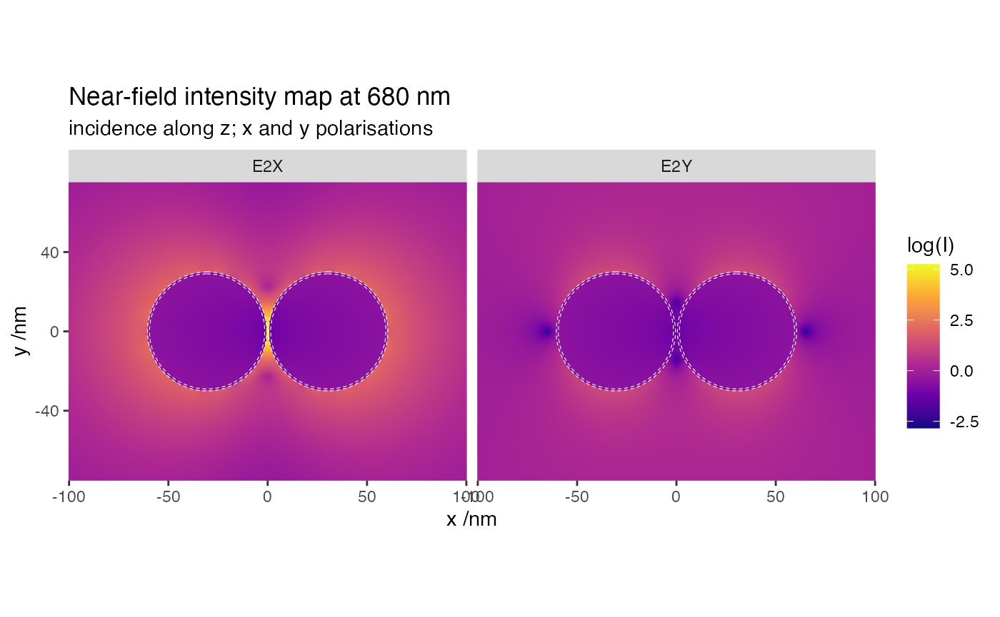
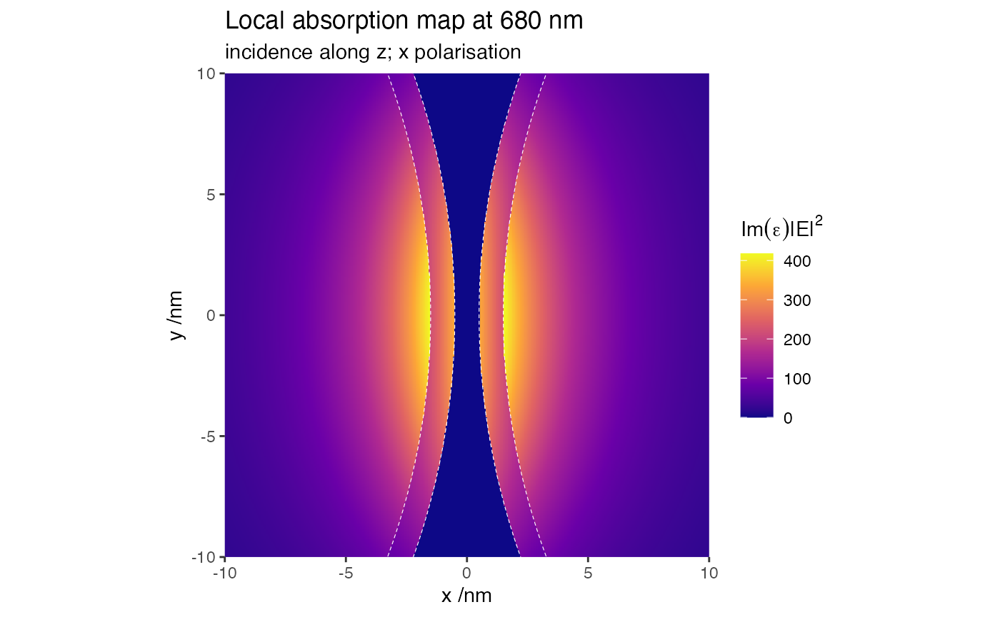

Near-field map of a nano-shell dimer
28 January, 2022
Source:vignettes/03_nearfield_coreshells/03_nearfield_coreshells.Rmd
03_nearfield_coreshells.RmdObjective
This example illustrates the calculation of near-field maps at a specific wavelength. The structure consists of two core-shell spheres Au@Ag in water with a 1 nm gap.
Far-field
We first run a far-field simulation to identify a resonance,
ModeAndScheme 2 2
MultipoleCutoff 8
Wavelength 300 800 100
Incidence 0 0 0 1
Medium 1.7689 # for water
Verbosity 1
OutputFormat HDF5 cross_sections
# 2 spheres spaced by 1nm along x
Scatterers 2
Au@Ag -30.5 0 0 30 29
Au@Ag 30.5 0 0 30 29
Near-field
Next we run a near-field simulation at 680 nm,
ModeAndScheme 1 2
MultipoleCutoff 12
Wavelength 680
Incidence file incidence 1 # linear polarisation
Medium 1.7689 # for water
Verbosity 1
OutputFormat HDF5 map
MapQuantity 2 E # map I=|E|^2"
SpacePoints -100 100 400 -75 75 300 0 0 1
# 2 spheres spaced by 1nm along x
Scatterers 2
Au@Ag -30.5 0 0 30 29
Au@Ag 30.5 0 0 30 29The command to run the example is simply
../../build/terms input_nf > logThe full log contains basic details of the calculations, and finishes with the timing.
Show log file (click to open)
readInputFile> Parsing file input_nf
readInputFile> Detected keyword ModeAndScheme
mode=1 => mapNF at diff. lambda and diff. Inc. and Sca_angles
scheme=2 => Seek T^(ji) using Stout's iterative scheme
readInputFile> Detected keyword MultipoleCutoff
Supplied ncut(1)= 12
Setting ncut(2)= ncut(1)
Setting ncut(3)= -8
readInputFile> Detected keyword Wavelength
Wavelength (nm): 680.0000
readInputFile> Detected keyword Incidence
Incidence filename= incidence
Expected incidence count= 2
readInputFile> X-linear polarization
Incident Euler angles and weights:
alpha beta gamma weight
0.00000000 0.00000000 0.00000000 0.50000000
0.00000000 0.00000000 1.57079600 0.50000000
readInputFile> Detected keyword Medium
Constant host epsilon= 1.7689E+0
readInputFile> Detected keyword Verbosity
verbosity= 1 (Low)
readInputFile> Detected keyword OutputFormat
OutputFormat=HDF5
All output files are stored in file "map.h5 "
readInputFile> Detected keyword MapQuantity
Map enhancement |E|**p with p= 2
readInputFile> Detected keyword SpacePoints
i,lb_i,ub_i,npts_i= 1 -1.00000000000000000E+02 1.00000000000000000E+02 400
i,lb_i,ub_i,npts_i= 2 -7.50000000000000000E+01 7.50000000000000000E+01 300
i,lb_i,ub_i,npts_i= 3 0.00000000000000000E+00 0.00000000000000000E+00 1
nGridPoints= 241402
readInputFile> Detected keyword Scatterers
with nscat= 2
readInputFile> Descriptor(s) and circumscribing sphere(s):
scatID String x y z R_0
1 Au@Ag -3.0500E+1 0.0000E+0 0.0000E+0 3.0000E+1
2 Au@Ag 3.0500E+1 0.0000E+0 0.0000E+0 3.0000E+1
readInputFile> Individual geometry characteristic(s):
scatID Details
1 Mie with ncoats= 1 R_{-k}: 2.9000E+1
2 Mie with ncoats= 1 R_{-k}: 2.9000E+1
readInputFile> Dielectric functions for (coated) Mie scatterer(s):
scatID volID Label
1 0 Ag
1 -1 Au
2 0 Ag
2 -1 Au
readInputFile> Finished parsing 10 keywords
mapNF> ===== Wavelength: 680.00 (nm) ======================
solve> Prestaging...
solve> Staging and solving/inverting...
solve> Done!
calcSphBessels> WARNING: ZBESJ set NZ components to zero. NZ= 3
calcSphBessels> WARNING: ZBESJ set NZ components to zero. NZ= 3
calcSphBessels> WARNING: ZBESJ set NZ components to zero. NZ= 3
calcSphBessels> WARNING: ZBESJ set NZ components to zero. NZ= 3
calcSphBessels> WARNING: ZBESJ set NZ components to zero. NZ= 3
calcSphBessels> WARNING: ZBESJ set NZ components to zero. NZ= 3
calcSphBessels> WARNING: ZBESJ set NZ components to zero. NZ= 3
calcSphBessels> WARNING: ZBESJ set NZ components to zero. NZ= 3
mapNF> Done!
termsProgram> Program run time (CPU & real in s): 1.566E+01 1.557E+01map_E which contains the near-field data.
Show results file (click to open)
group name otype dclass dim
0 / Near-Field H5I_GROUP
1 /Near-Field Gridpoints H5I_DATASET FLOAT 241402 x 3
2 /Near-Field Incidences H5I_DATASET FLOAT 2 x 4
3 /Near-Field Wavelengths H5I_DATASET FLOAT 1
4 /Near-Field map_E H5I_DATASET FLOAT 241402 x 9Rows: 241,402
Columns: 9
$ lambda <dbl> 680, 680, 680, 680, 680, 680, 680, 680, 680, 680, 680, 680, 680…
$ x <dbl> -100, -100, -100, -100, -100, -100, -100, -100, -100, -100, -10…
$ y <dbl> -75.0, -75.0, -74.5, -74.5, -74.0, -74.0, -73.5, -73.5, -73.0, …
$ z <dbl> 0, 0, 0, 0, 0, 0, 0, 0, 0, 0, 0, 0, 0, 0, 0, 0, 0, 0, 0, 0, 0, …
$ scatID <dbl> 0, 0, 0, 0, 0, 0, 0, 0, 0, 0, 0, 0, 0, 0, 0, 0, 0, 0, 0, 0, 0, …
$ volID <dbl> 0, 0, 0, 0, 0, 0, 0, 0, 0, 0, 0, 0, 0, 0, 0, 0, 0, 0, 0, 0, 0, …
$ E2avg <dbl> 0.9581860, 0.9581860, 0.9622476, 0.9622476, 0.9663924, 0.966392…
$ E2X <dbl> 0.8536298, 0.8536298, 0.8618566, 0.8618566, 0.8702688, 0.870268…
$ E2Y <dbl> 1.062742, 1.062742, 1.062639, 1.062639, 1.062516, 1.062516, 1.0…
Because the superposition T-matrix method does not require any discretisation of the scatterers, we can compute accurately the fields in very small regions of space, such as in the gap between the two particles, and within their thin shells. Beside the near-field information, the output also returns two variables to index the different regions and materials. This allows for easier post-processing, for example the calculation of local rate of absorption, which is proportional to \(\Im(\varepsilon)\cdot |\mathbf{E}|^2\), where \(\varepsilon(\lambda)\) is the (wavelength-dependent) dielectric function of each material. The following close-up map illustrates this field distribution across the gap.
Rows: 321,602
Columns: 8
$ lambda <dbl> 680, 680, 680, 680, 680, 680, 680, 680, 680, 680, 680, 680,…
$ x <dbl> -10, -10, -10, -10, -10, -10, -10, -10, -10, -10, -10, -10,…
$ y <dbl> -10.00, -10.00, -9.95, -9.95, -9.90, -9.90, -9.85, -9.85, -…
$ z <dbl> 0, 0, 0, 0, 0, 0, 0, 0, 0, 0, 0, 0, 0, 0, 0, 0, 0, 0, 0, 0,…
$ scatID <dbl> 1, 1, 1, 1, 1, 1, 1, 1, 1, 1, 1, 1, 1, 1, 1, 1, 1, 1, 1, 1,…
$ volID <dbl> -1, -1, -1, -1, -1, -1, -1, -1, -1, -1, -1, -1, -1, -1, -1,…
$ E2 <dbl> 20.03313, 20.03313, 20.13219, 20.13219, 20.23145, 20.23145,…
$ absorption <dbl> 21.86938, 21.86938, 21.97752, 21.97752, 22.08589, 22.08589,…
Last run: 28 January, 2022